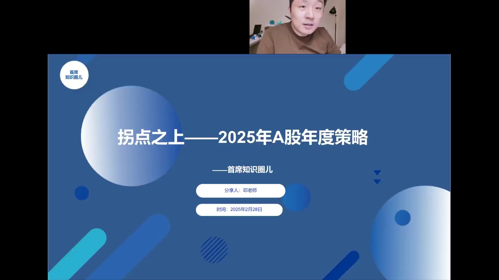
本次分享以"拐点之上"为主题，在2025年初市场经历春季躁动后，重新审视短期交易拥挤度、两会季节性规律，以及全年宏观组合对应的风格与行业配置思路。
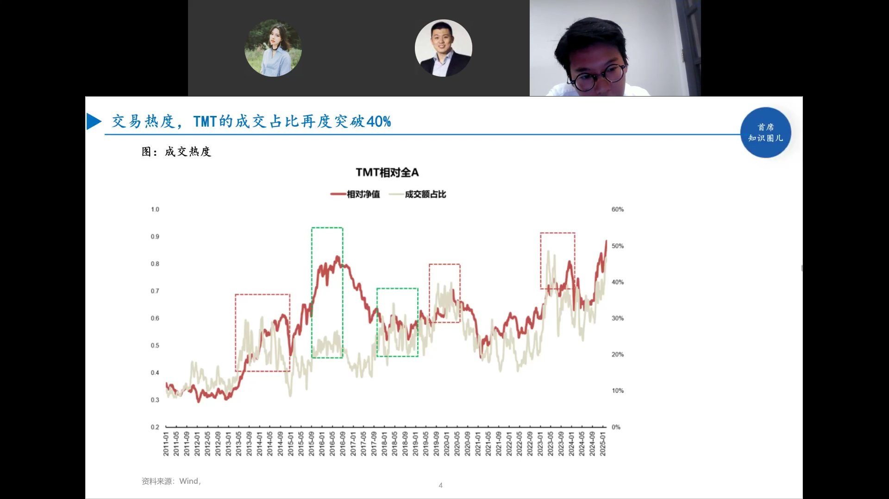
图中灰线为TMT成交额占全A比重，红线为TMT相对全A的净值。历史上成交占比突破40%出现过多次：2013-2014、2015-2016（绿色框）、2019-2020、2023（红色框），每次成交拥挤后TMT相对净值都出现过阶段性回撤，但并非每次都对应趋势终结。
当前TMT成交占比再次冲到接近50%的极端位置，短期交易确实拥挤，但"成交占比高"本身不必然是卖出信号，需要结合后续盈利与政策验证。
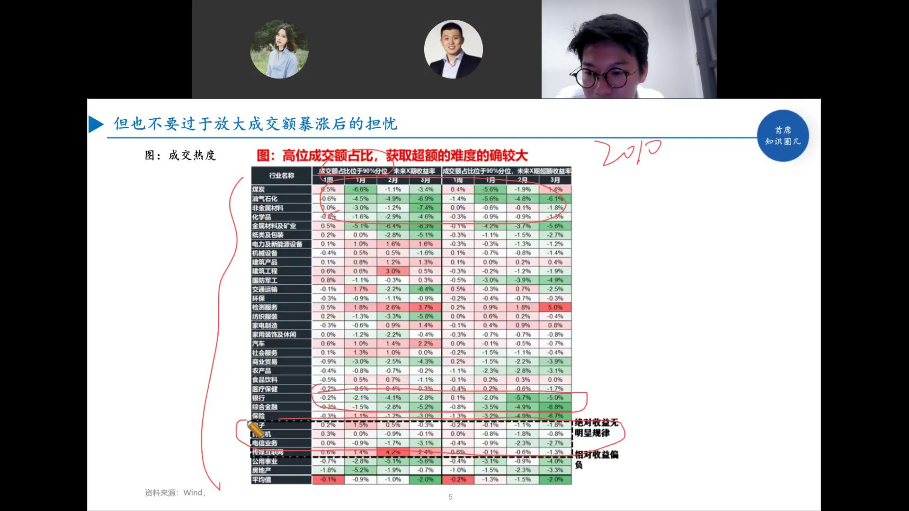
把每个行业成交额占比推到历史90%分位以上后，观察未来1周、1月、1季度的收益。结论是：获取超额收益的难度确实较大（相对收益偏负），但绝对收益并无明显规律——银行、非银、地产等在高位成交后甚至录得正收益。
成交拥挤更多影响的是"跑赢难度"，而非"会不会亏钱"。对整体市场不必过度恐慌，但追高热门板块做超额收益需要谨慎。
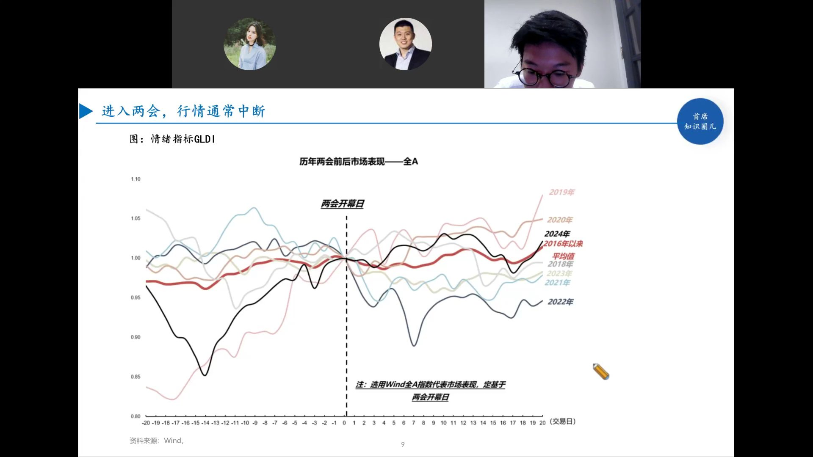
复盘2018-2024年两会前后全A走势，平均来看：两会前市场往往有一波春季躁动上涨，但进入两会后行情通常中断、出现震荡或回调，会后才重新选择方向。黑色粗线为2016年以来平均值，呈现典型的"会前涨、会中震荡、会后再选择"形态。
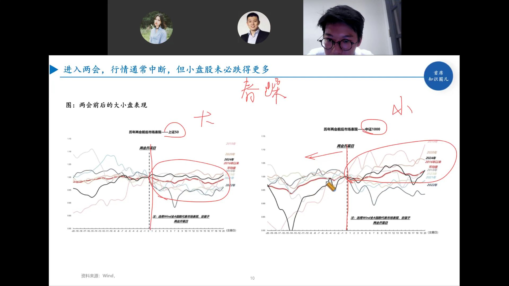
把两会后走势拆成上证50（大盘价值）和中证1000（小盘成长）分别看：两会期间大盘确实容易回调，但小盘股在会后反而往往有相对收益，即"两会中断的主要是大盘蓝筹，小盘成长的春季躁动行情未必结束"。
春季躁动特征：历史上春季躁动的主力是小盘成长，两会只是中场休息，而非风格切换的终点。
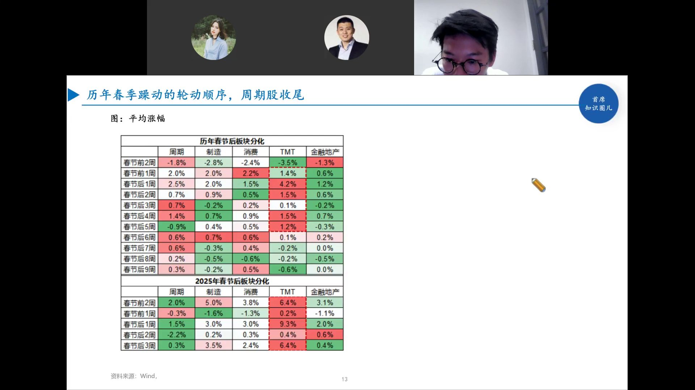
历史规律：春节后1-2周TMT领涨，随后逐步扩散到制造、消费，春季躁动的尾声往往由周期股收尾。2025年春节后实际数据：TMT在节后1周大涨9.3%，节后3周周期开始接力，与历史轮动路径基本一致。
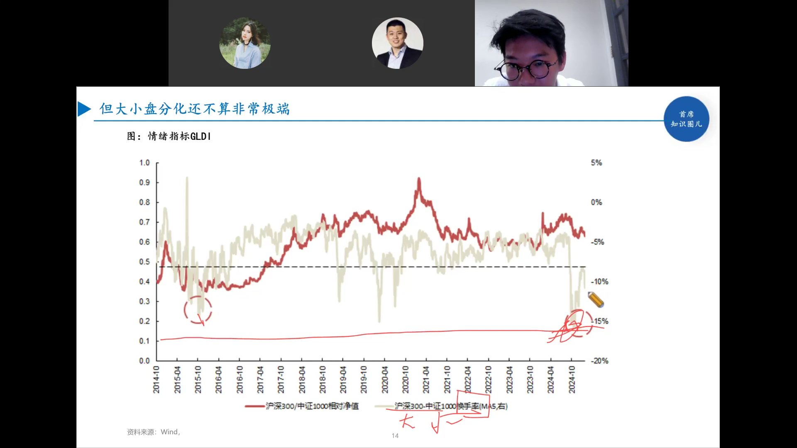
用沪深300相对中证1000的净值与换手率差值衡量大小盘分化：当前小盘相对大盘的强势虽已持续一段时间，但换手率分化程度还未到2015年、2021年那种极端水平，意味着小盘风格还有延续空间，尚未到均值回归的时候。
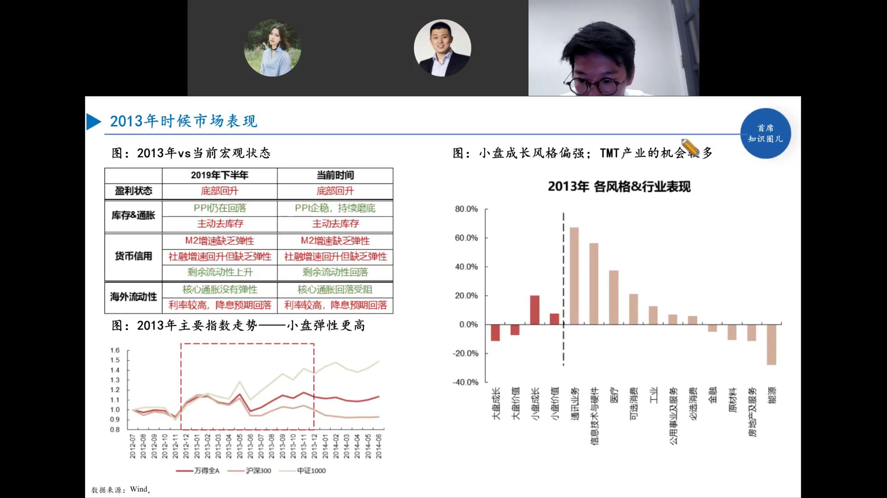
把2013年下半年和当前做对照：盈利都是底部回升、PPI仍在回落磨底、主动去库存、M2增速缺乏弹性、社融回升但缺弹性、核心通胀回落受阻、利率较高降息预期回落——宏观组合高度相似。
而2013年的市场结果是：小盘成长风格大幅跑赢，TMT涨幅领先，大盘价值和能源地产垫底。邓老师认为2025年在相似宏观组合下，风格大概率重演小盘成长占优。
注意差异：表格中"剩余流动性"一项2013年是上升、当前是回落，这是与2013年最大的不同点，也是后续需要跟踪的变量。
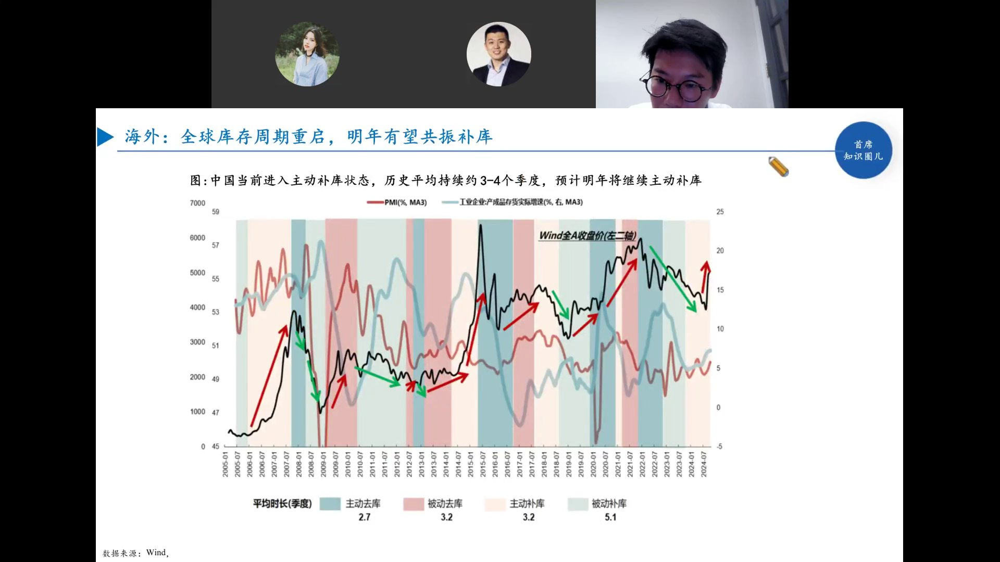
图中按主动去库/被动去库/主动补库/被动补库划分库存周期，历史平均时长：主动去库2.7季度、被动去库3.2、主动补库3.2、被动补库5.1。中国当前已进入主动补库状态，历史上主动补库平均持续3-4个季度，预计明年全球有望共振补库，利好周期与出口链。
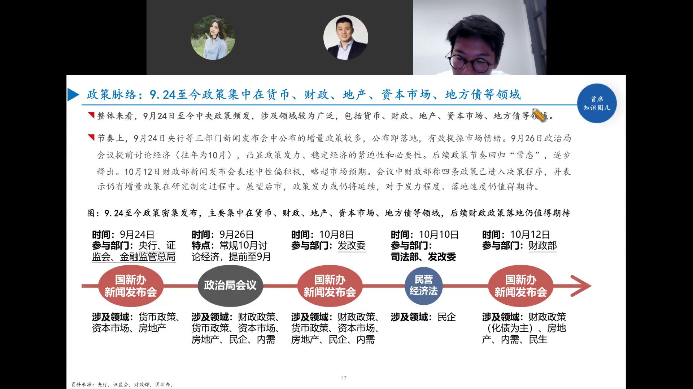
整体看9月24日中央政策频发，涉及货币、财政、地产、资本市场、地方债等广泛领域。节奏上9.24央行等三部门发布会增量政策最多、公布即落地；9.26政治局提前讨论经济（往年10月）凸显稳增长紧迫性。政策发力仍将延续。
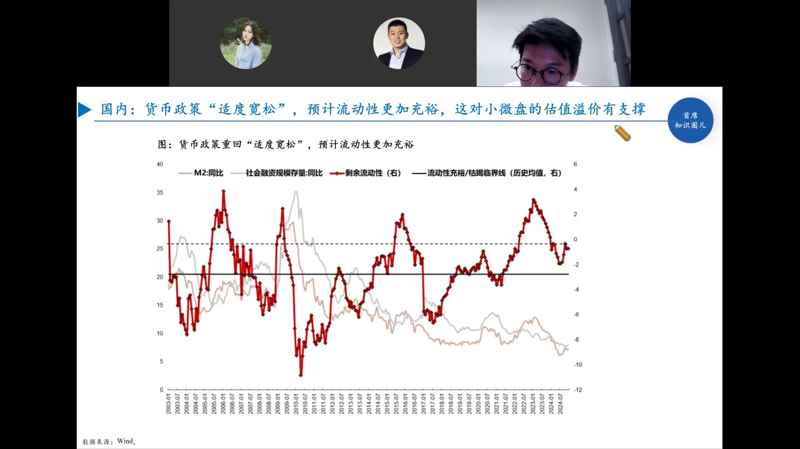
剩余流动性=M2增速-社融增速。当前剩余流动性从高位回落但仍在0轴附近，货币政策重回"适度宽松"后预计流动性更加充裕。这种"宽货币、紧信用"环境下，资金在实体找不到高回报资产，更容易流向小微盘做估值溢价。
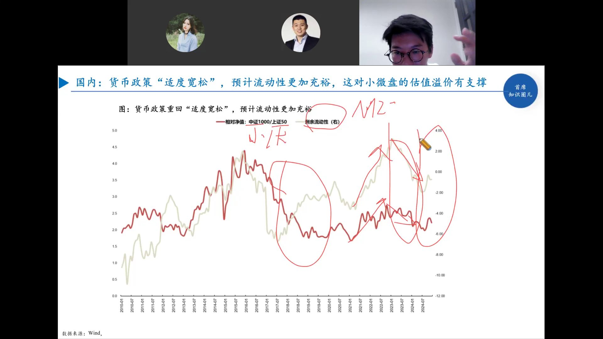
历史上剩余流动性上行阶段，中证1000相对上证50往往同步走强（图中红圈标注的2014-2015、2019-2020、2022-2024三段）。当前剩余流动性虽有回落但货币政策转松，对小微盘估值溢价仍有支撑。
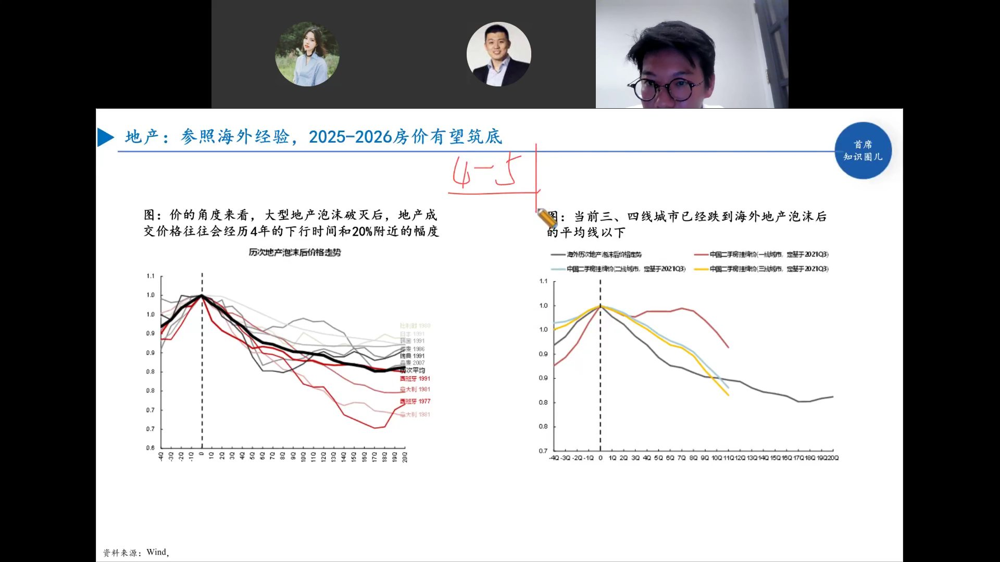
海外经验：大型地产泡沫破灭后，价格通常经历约4年下行时间、20%附近幅度。中国本轮从2021Q3高点算起，一二线仍在海外平均线附近，三四线已跌破海外泡沫后平均线。按4-5年周期推算，2025-2026年房价有望逐步筑底。
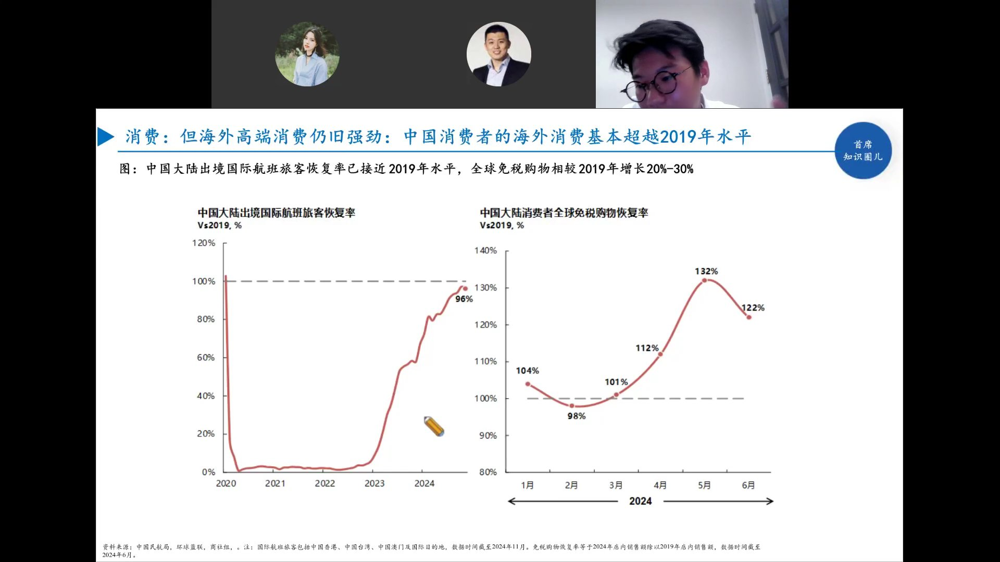
虽然国内消费整体偏弱，但中国消费者的海外高端消费已基本超越2019年水平：出境航班旅客恢复率达96%，全球免税购物恢复率在2024年5月一度达132%，6月仍有122%。说明高收入群体的消费能力并未受损。
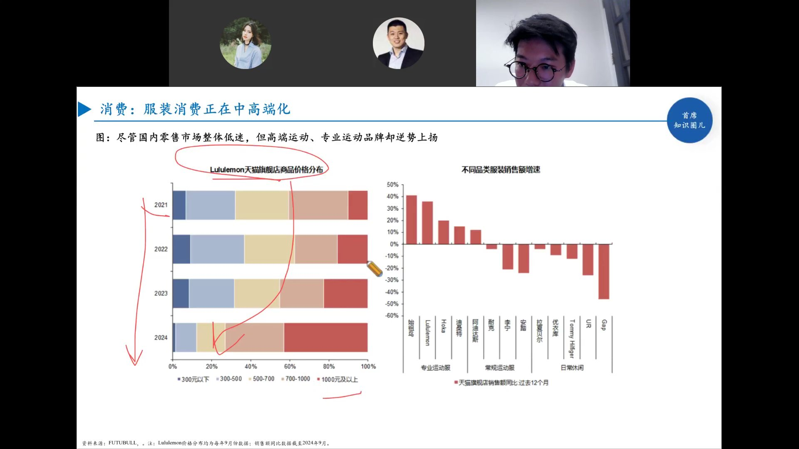
国内零售整体低迷，但高端运动、专业运动品牌逆势上扬：Lululemon商品价格带从2021年以300-500元为主，到2024年1000元以上占比大幅提升；销售增速上，lululemon、Hoka、迪桑特等专业运动品牌正增长，而大众休闲品牌下滑明显。
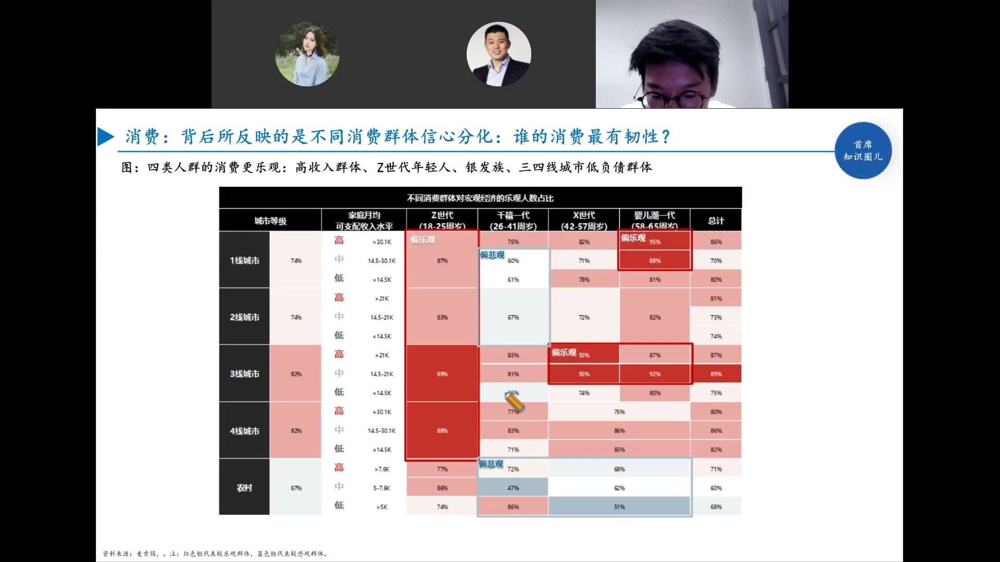
麦肯锡调研显示，四类人群消费更乐观：高收入群体、Z世代年轻人、银发族（婴儿潮一代）、三四线城市低负债群体。最悲观的是农村低收入、千禧一代中低收入群体。消费结构性分化非常明显。
投资含义：消费选股要瞄准"高收入+年轻+银发+低负债三四线"这四类人群对应的品牌，而非泛泛买大消费。
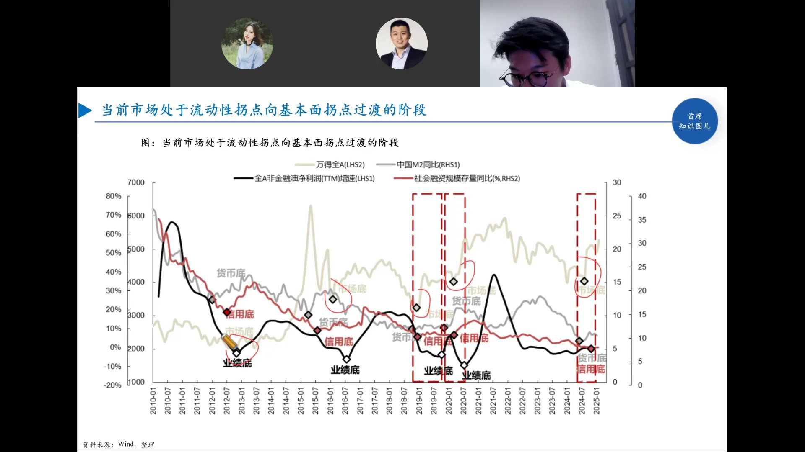
历史复盘：每轮周期依次出现货币底→信用底→业绩底→市场底。当前货币底、信用底已现，业绩底正在确认，市场处于"流动性拐点向基本面拐点过渡"阶段——这一阶段历史上往往是小盘成长股表现最好的时段，因为盈利尚未全面兑现，但流动性宽松已推升估值。
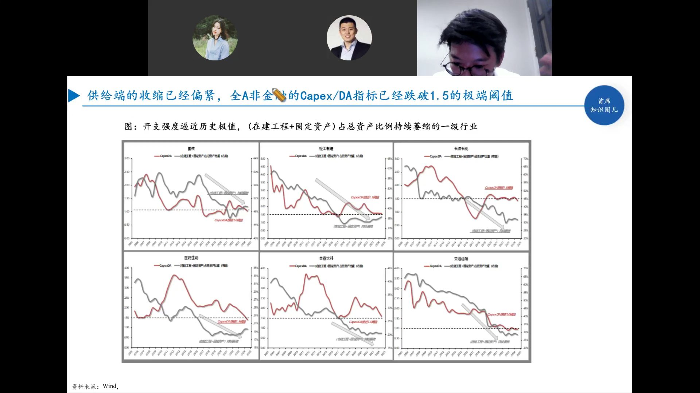
支出强度逼近历史极值：多个传统行业的Capex/折旧已跌破1.5的极端阈值，(在建工程+固定资产)/占总资产比例持续萎缩。供给端长期收缩意味着一旦需求回暖，这些行业的产能利用率和价格弹性会很大，这也是后期周期股收尾的供给侧逻辑。
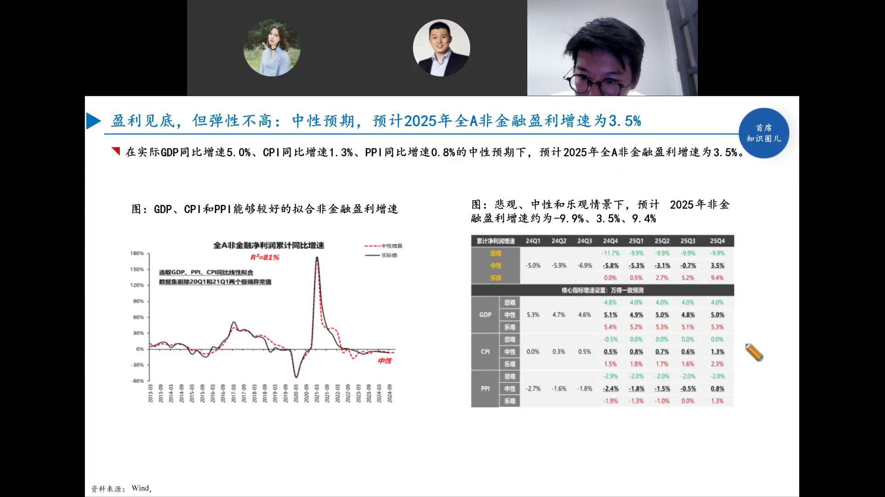
用GDP、CPI、PPI线性拟合全A非金融盈利增速，R²达81%。在实际GDP 5.0%、CPI 1.3%、PPI 0.8%的中性假设下，预计2025年全A非金融盈利增速约3.5%；悲观情景-9.9%，乐观情景9.4%。盈利是"见底但弹性不大"的温和复苏。
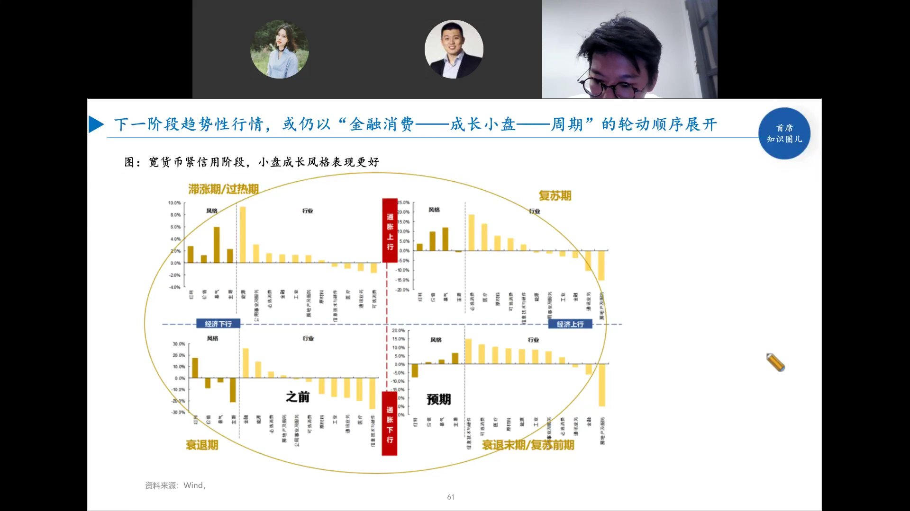
在"宽货币、紧信用"阶段（即当前），历史复盘显示小盘成长风格表现更好。全年节奏预判：先金融消费（防御+政策受益），再成长小盘（流动性+盈利底过渡期主力），最后周期收尾（补库+供给收缩共振）。
全年策略落点：风格上偏小盘成长，行业上沿"金融消费→成长TMT→周期"的轮动顺序布局，短期不必因TMT成交拥挤而恐慌，但要意识到超额收益难度在上升。